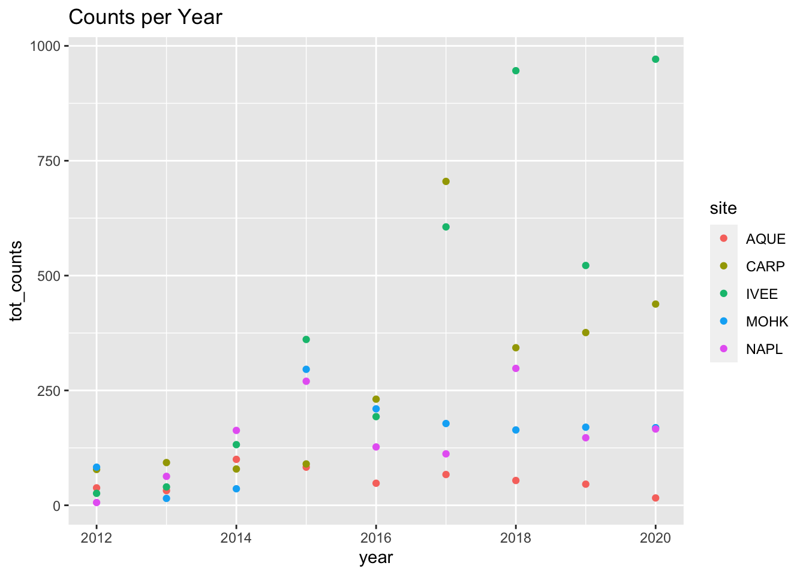
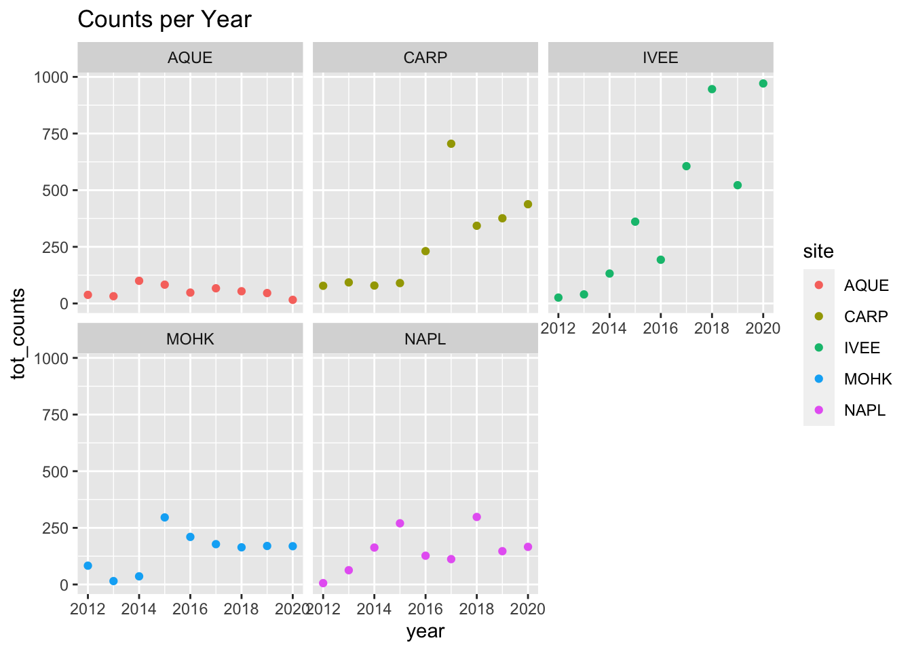
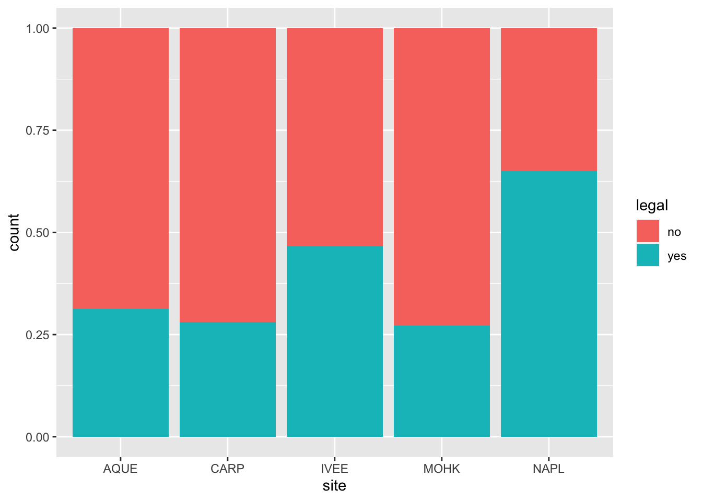

here() starts at /Users/javipatron/Documents/MEDS/Courses/EDS 221/eds221-day6-activities
library(janitor)
Attaching package: 'janitor'
The following objects are masked from 'package:stats':
chisq.test, fisher.test
lobsters <-read_csv(here("data","Lobster_Abundance_All_Years_20210412.csv"), na =c("-99999", "")) %>%clean_names() %>%uncount(count)
Rows: 6309 Columns: 10
── Column specification ────────────────────────────────────────────────────────
Delimiter: ","
chr (2): SITE, REPLICATE
dbl (7): YEAR, MONTH, TRANSECT, SIZE_MM, COUNT, NUM_AO, AREA
date (1): DATE
ℹ Use `spec()` to retrieve the full column specification for this data.
ℹ Specify the column types or set `show_col_types = FALSE` to quiet this message.
Create a summary table that finds the total counts (see: n()), and mean carapace lengths of lobsters observed in the dataset by site and year.
Create a ggplot graph of the number of total lobsters observed (y-axis) by year (x-axis) in the study, grouped (either aesthetically or by faceting) by site
`summarise()` has grouped output by 'site'. You can override using the
`.groups` argument.
Graph with aesthetic view
lobster_plot <-ggplot(summary_lobsters, aes(x=year, y = tot_counts)) +geom_point(aes(color = site)) +labs(title ="Counts per Year")lobster_plot

Graph with facet view
lobster_plot <-ggplot(summary_lobsters, aes(x=year, y = tot_counts)) +geom_point(aes(color = site)) +labs(title ="Counts per Year") +facet_wrap(~site)lobster_plot

Create a subset that only contains lobster data from 2020 (note: this should be from the original data you read in, not the summary table you created above)
lobster_2020 <-subset(lobsters, year ==2020)
Write code (you can decide how to do this - there are a number of ways) to find the counts of lobsters observed at each site (only using site as the grouping factor) that are above and below the legal limit. Hint: You may want to add a new column legal that contains "yes" or "no" based on the size of the observed lobster (see dplyr::case_when() for a really nice way to do this), then use group_by() %>% summarize(n()) or dplyr::count() to get counts by group within variables
`summarise()` has grouped output by 'site'. You can override using the
`.groups` argument.
Graph
ggplot(tot_lobster, aes(fill =legal, x = site, y = count)) +geom_col(position ="fill")

TASK 3
filter() practice
Create and store a subset that only contains lobsters from sites "IVEE", "CARP" and "NAPL". Check your output data frame to ensure that only those three sites exist.
Create a subset that only contains lobsters observed in August.
Create a subset with lobsters at Arroyo Quemado (AQUE) OR with a carapace length greater than 70 mm.
Create a subset that does NOT include observations from Naples Reef (NAPL
Use case_when() to add a new column called size_bin that contains "small" if carapace size is <= 70 mm, or "large" if it is greater than 70 mm. Check output.
Use case_when() to add a new column called designation that contains "MPA" if the site is "IVEE" or "NAPL", and "not MPA" for all other outcomes.
# Question: How would you add na.rm = TRUE in size_bin?lobster_large_small <- lobsters |>mutate(size_bin =case_when( size_mm >70~"small", size_mm <70~"large", ) )loberster_mpa <- lobsters |>mutate(destination =case_when( site %in%c("IVEE", "NAPL") ~"MPA", site %in%c("AQUE", "CARP", "MOHK") ~"not MPA" ) )